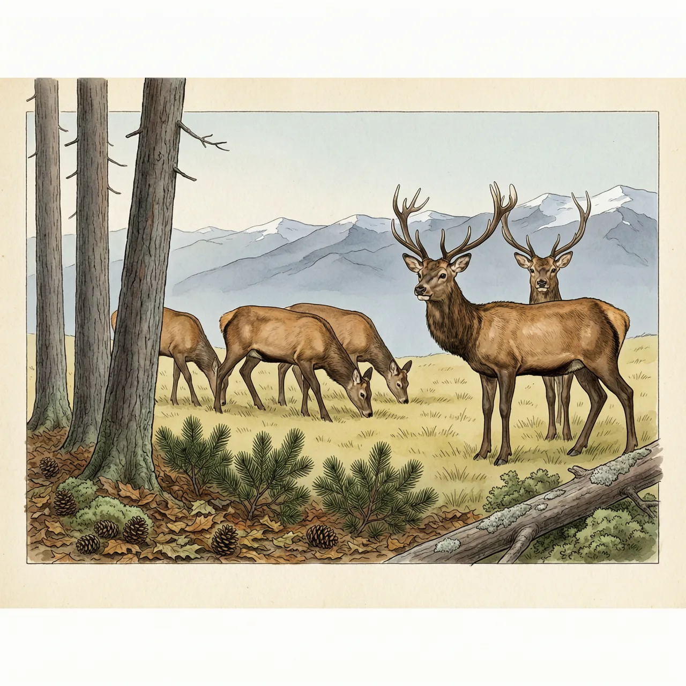
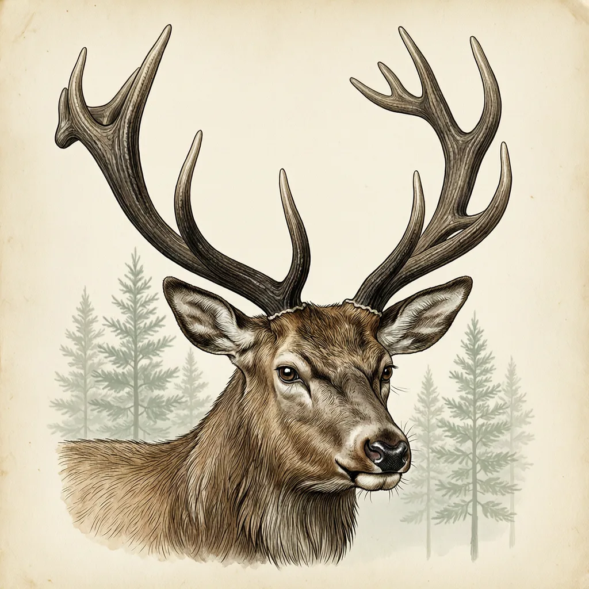

欧洲马鹿是体型最大的鹿科物种之一，雄鹿长6至8叉的角，雌性无角。它住高山森林，夏天上山、冬天退回平原密林，每年9到10月发情，雄鹿靠吼叫和顶角决斗争配偶。在中国它是保护动物，在阿根廷却入侵了数个国家公园，被列入世界百大外来入侵种。
清晨的高山林缘，三五成群的欧洲马鹿低头啃草，稍有响动就同时抬头——这种鹿的听觉和嗅觉都很发达。它的分布从欧洲铺到中亚，向南伸进北非的山区，是非洲仅有的两种鹿之一，另一种是黇鹿；在中国，它主要见于新疆，即塔里木马鹿。欧洲马鹿栖息于高山森林地带，体长1.5至2米，一般体重200到300千克，雄鹿比雌鹿更大更重，毛色有灰色、棕色或红色。它是世界上体型最大的鹿科物种之一，一般仅次于驼鹿，也是英国最大的陆地动物。季节变化推着它换海拔：夏天上山，冬天再下山，退回平原的密林里。
欧洲马鹿每年9到10月交配，这是一年里雄鹿最忙的时候：它们低吼着互相叫阵，随后顶着角撞在一起，用角叉相互撬压，赢的那只才有机会靠近发情的雌鹿。鹿角是这场争夺里唯一的武器，也只有雄性欧洲马鹿长角——多为6叉，最多8叉，第1、2叉靠得很近。角每年脱落、每年重长，上一季撞断或撞歪的部分，下一季换一副新的。5到6月，雌鹿产仔，一胎通常只有一个。
同一种鹿，同时躺在两份性质相反的名单上。在中国，马鹿的鹿尾、鹿鞭和鹿茸被视为名贵滋补品，遭到大量捕杀和饲养，被列为国家二级保护动物。在阿根廷，欧洲马鹿却入侵了数个国家公园，影响原生的动植物，被国际自然保护联盟物种存续委员会的入侵物种专家小组列入世界百大外来入侵种。同一片南美山林里还有一种只见于智利和阿根廷南部的特有鹿，欧洲马鹿可能正在与它争夺同一份资源。
